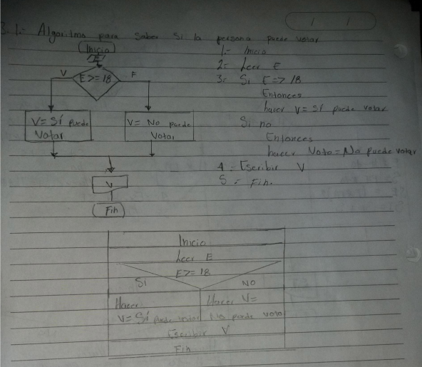

Diagramas de flujo
2.1 Realice un diagrama de flujo y pseudocódigo que representen el algoritmo para obtener el área de un triángulo..
2.1 Realice un diagrama de flujo y pseudocódigo que representen el algoritmo para obtener el área de un triángulo..
2.2 Una empresa importadora desea determinar cuántos dólares puede adquirir con equis cantidad de dinero mexicano. Realice un diagrama de flujo y pseudocódigo que representen el algoritmo para tal fin.
2.3 Una empresa que contrata personal requiere determinar la edad de
las personas que solicitan trabajo, pero cuando se les realiza la entrevista sólo se les pregunta el año en que nacieron. Realice el diagrama
de flujo y pseudocódigo que representen el algoritmo para solucionar
este problema.
2.4 Un estacionamiento requiere determinar el cobro que debe aplicar a
las personas que lo utilizan. Considere que el cobro es con base en las
horas que lo disponen y que las fracciones de hora se toman como
completas y realice un diagrama de flujo y pseudocódigo que representen el algoritmo que permita determinar el cobro.
3.1 Realice un algoritmo para determinar si una persona puede votar
con base en su edad en las próximas elecciones. Construya el diagrama de flujo, el pseudocódigo y el diagrama N/S.
